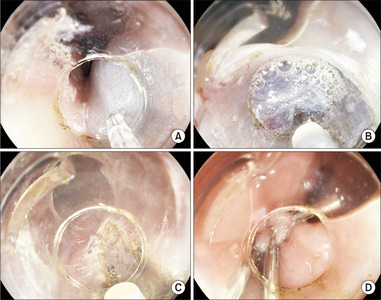

食道弛緩不能症目前無法完全治癒，因為已經退化的神經無法再生。但好消息是，透過治療可以達成以下目標：
重要觀念： 治療的核心策略是「打開那扇門」— 透過各種方式讓緊閉的下食道括約肌能夠放鬆或被切開。
適用情況： 症狀輕微、無法接受手術、或作為等待治療期間的過渡
常用藥物： - 鈣離子通道阻斷劑（Calcium Channel Blockers）：如 Nifedipine，可放鬆食道平滑肌 - 硝酸鹽類（Nitrates）：如 Isosorbide dinitrate，幫助括約肌放鬆
效果與限制： - 症狀改善有限，通常只能部分緩解 - 副作用包括頭痛、低血壓、頭暈 - 長期效果不佳，不建議作為主要治療方式 - 適合不適合其他治療的患者
什麼是這個治療？ - 透過胃鏡將肉毒桿菌素（Botox）直接注射到下食道括約肌 - 肉毒桿菌素可以暫時麻痺括約肌，使其放鬆
優點： - 操作簡單、風險低 - 不需全身麻醉 - 門診即可完成
缺點： - 效果是暫時的，通常只維持 6 ~ 12 個月 - 需要反覆注射 - 長期反覆注射可能造成食道壁纖維化，增加日後手術困難度 - 症狀緩解率約 70 ~ 80%，但效果會隨時間遞減
最適合的對象： - 年長者或身體狀況不適合手術者 - 作為診斷性治療（確認症狀是否因括約肌造成） - 等待手術期間的過渡治療
什麼是這個治療？ - 透過胃鏡將一個特殊的氣球（Balloon）放到下食道括約肌處 - 充氣將氣球撐大，藉此撐裂（Disruption）緊縮的括約肌纖維
優點： - 不需開刀，屬於內視鏡治療 - 單次治療成功率約 65 ~ 80% - 可重複進行以提高效果 - 住院時間短（通常 1 天或門診即可）
缺點： - 食道穿孔（Esophageal Perforation）的風險約 1 ~ 5% - 部分患者症狀可能復發，需要再次擴張 - 可能需要多次治療才能達到理想效果
效果： - 單次擴張約 65 ~ 80% 的患者症狀改善 - 多次擴張（分級擴張）可提高到 85 ~ 90% 的成功率
什麼是這個手術？ - 透過腹腔鏡（微創手術）在下食道括約肌處切開肌肉層 - 通常會同時加做胃底摺疊術（Fundoplication），以減少術後胃食道逆流
優點： - 長期效果佳，10 年成功率約 80 ~ 85% - 單次手術即可達到良好效果 - 微創手術，傷口小、恢復快
缺點： - 需要全身麻醉和住院（通常 1 ~ 3 天） - 有手術相關風險（出血、感染等） - 術後可能出現胃食道逆流（GERD），約 10 ~ 30% - 需要有經驗的外科醫師執行
效果： - 短期症狀緩解率約 85 ~ 95% - 長期（10 年以上）成功率約 80 ~ 85%
什麼是 POEM？ - 這是近年來最重要的治療創新，於 2010 年左右開始臨床應用 - 透過口腔將內視鏡伸入食道，在食道黏膜下建立一條「隧道」 - 經由這條隧道，從食道內部切開括約肌 - 完全不需要在體表開刀
優點： - 完全無體表傷口（No External Incision） - 症狀緩解率高達 80 ~ 95% - 住院時間短（通常 1 ~ 2 天） - 恢復快，多數患者 1 ~ 2 週可恢復正常飲食 - 對第三型（Type III，痙攣型）弛緩不能症效果特別好 - 可依需要調整切開的長度
缺點： - 需要受過專業訓練的醫師執行 - 術後胃食道逆流（GERD）的發生率較高，約 20-50%（依症狀評估）；若以內視鏡檢查，食道炎發生率約 30-60%，多數可透過質子幫浦抑制劑 (PPI) 控制 - 不包含抗逆流手術步驟 - 長期（超過 10 年）的數據仍在累積中
效果： - 短期（1 ~ 2 年）症狀緩解率約 80 ~ 95% - 中期（3 ~ 5 年）效果仍維持良好 - 根據 SAGES 2024 年指引，POEM 已被建議為優先考慮的治療選項之一
最新進展 (2025-2026)：部分醫療中心已開始施行「POEM-F」，即在 POEM 手術同時進行內視鏡胃底摺疊術，以減少術後胃食道逆流。早期研究顯示 GERD 緩解率達 86%，但此技術仍在發展階段。

圖：POEM 手術步驟。(A) 黏膜下注射染劑 (B) 建立黏膜下隧道 (C) 從隧道頂端開始肌肉切開 (D) 以金屬夾關閉黏膜切口。圖片來源：Stavropoulos SN, et al. International Journal of Gastrointestinal Intervention. 2025;14(4):197. CC-BY-NC. 原文：IJGII| 比較項目 | 藥物治療 | 肉毒桿菌注射 | 氣球擴張術 | Heller 手術 | POEM |
|---|---|---|---|---|---|
| 治療方式 | 口服藥 | 胃鏡注射 | 胃鏡氣球 | 腹腔鏡手術 | 內視鏡手術 |
| 麻醉方式 | 不需要 | 鎮靜 | 鎮靜/全麻 | 全身麻醉 | 全身麻醉 |
| 體表傷口 | 無 | 無 | 無 | 小切口 3~5 個 | 無 |
| 住院天數 | 不需住院 | 不需住院 | 0~1 天 | 1~3 天 | 1~2 天 |
| 症狀緩解率 | 低（< 50%） | 中（70~80%） | 中高（65~80%） | 高（85~95%） | 高（80~95%） |
| 效果持續 | 短暫 | 6~12 個月 | 數年 | 長期 | 長期 |
| 術後逆流風險 | 無 | 低 | 低 | 中（10~30%） | 較高（20~50%） |
| 適合對象 | 過渡期 | 高齡/無法手術 | 多數患者 | 多數患者 | 多數患者 |
以下流程圖可幫助您與醫師討論最適合的治療方式：
flowchart TD
A[確診食道弛緩不能症] --> B{患者是否適合<br/>手術或內視鏡治療？}
B -- 是 --> C{疾病亞型？}
B -- 否 --> D[考慮肉毒桿菌注射<br/>或藥物治療]
C --> E[第一型 / 第二型]
C --> F[第三型 — 痙攣型]
E --> G{患者偏好？}
G --> G1[偏好無傷口<br/>→ POEM]
G --> G2[偏好較低逆流風險<br/>→ Heller + 胃底摺疊]
G --> G3[希望避免手術<br/>→ 氣球擴張術]
F --> H[建議優先考慮 POEM<br/>切開長度可調整]
G1 --> I[與醫師詳細討論<br/>決定最終方案]
G2 --> I
G3 --> I
H --> I
D --> I
style A fill:#FFF3E0
style I fill:#E8F5E9重要提醒： 以上流程僅供參考，實際治療選擇需要根據您的年齡、身體狀況、疾病亞型、個人意願及醫師專業判斷來綜合決定。
無論接受哪種治療，以下事項都很重要：
📋 請填入貴院資料：
- 本院負責科別：_______________
- 聯絡電話 / 分機：_______________
- 門診時間：_______________
- 主治醫師：_______________
- 本院特色 / 年手術量：_______________
| 重點 | 說明 |
|---|---|
| 治療目標 | 降低下食道括約肌壓力，讓食物順利通過 |
| 效果最持久的治療 | POEM 和 Heller 手術（長期成功率最高） |
| 最新趨勢 | POEM 為近年主流治療選項之一 |
| 術後逆流 | POEM 較高、Heller + 胃底摺疊較低 |
| 決策關鍵 | 需考量亞型、年齡、個人偏好，與醫師共同決定 |